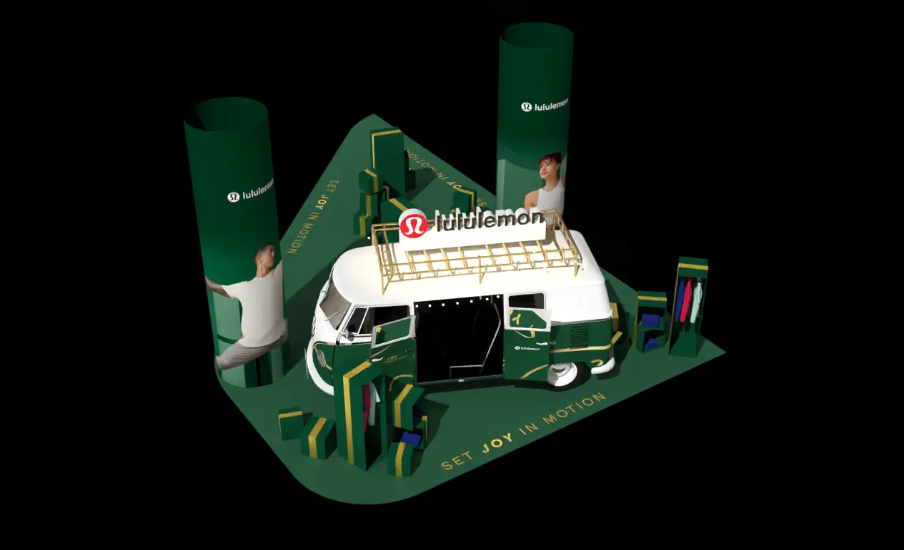
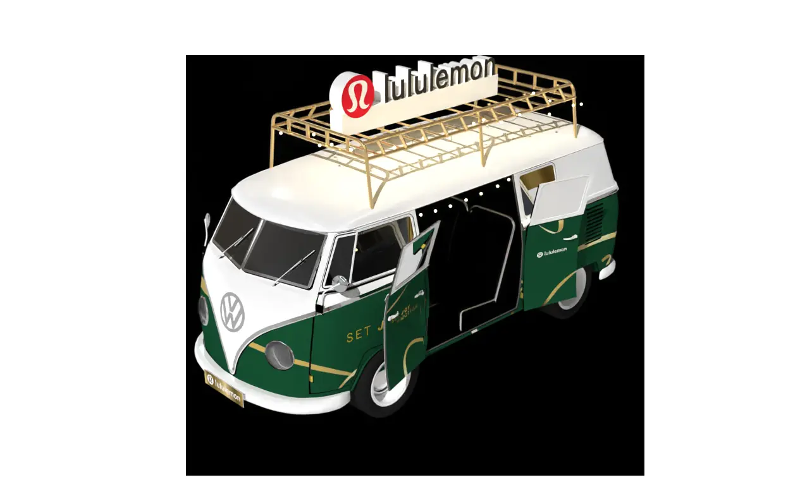
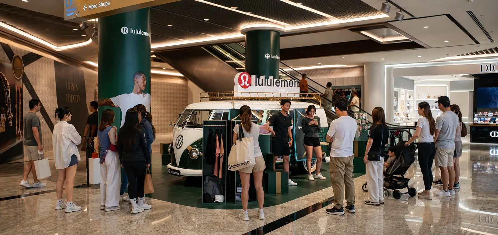
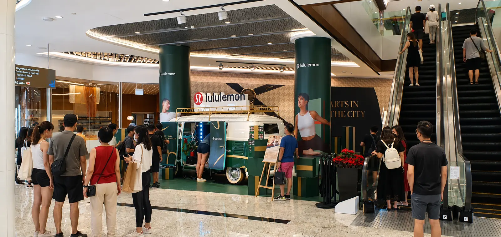

LULULEMON · SINGAPORE · 2022
Set Joy
in Motion
A festive green-and-gold public-space activation built around a vintage Kombi van and a clear, energetic retail journey.

DESIGN RESPONSE
The van anchors the installation while existing structural columns become campaign beacons. Product discovery and visitor circulation are organized around a strong branded center without obstructing the busy concourse.


